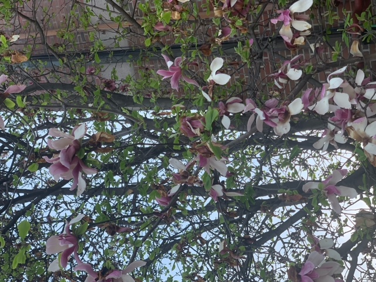

밤에 산책하며찍은 기숙사의 산책로

저녁 9시의 영남대학교 천마생활관의 산책로다.둥근 돌로 이루어진 바닥 패턴과 그 옆을 둘러싸는 잔디 그리고 나무,그 뒤에는 공사중이여서 막아놓은 벽이 하나의 화면에 조화롭게 이루어졌다.
저녘 기숙사의 편의점
생활관에 있는 편의점인 GS25이다.하얀 조명과 편의점의 푸른 빛이 신비로운 느낌을 냄.짙은 색의 나무바닥과 계단이 있다.나무로 이루어진 식탁이 있다.
택배를 받는 모습
화요일 5시즈음에 우정관에 있는 무인택배실에서 택배를 들고 오는 모습이다.무인택배실은 기숙사생들이 물건을 들고 오는 시스템으로 이루어짐.안의 내용물이 궁금증을 자아냄.
생활관의 정자
생활관에 있는 정자이다.이 정자는 생활관의 편의점GS25가 있는 위치보다 조금 위에 있는 장소이다.지붕이 기와로 이루어져 한국의 전통적인 건축방식의 멋을 보여준다. 뒤에 생활관 외벽에 반사된 주황색의 빛이 따스한 느낌을 줌.네 개의 기둥이 정자를 지탱하여 안정감을 줌.
생활관에서 내려다 본 정경
수요일 5시 30분 즈음에 기숙사의 창문으로 내려다 본 풍경이다.푸른 지붕과 붉은 벽돌로 이루어져 대비를 이룸.또한 ,여러 빌라,그 뒤로는 공사를 짖고있는 건물이 있다. 건물을 쌓기위해 사용되는 크레인,푸른 지붕 건물 아래의 넓은 주차장에 홀로 덩그러니 있는 차 한 대가 있다. 해가 저물어 노을이 이 한 장의 사진의 분위기를 따뜻하게 감싼다.
수업이 끝난 후 보는 영남대 이니셜
수업이 끝난 후 본 영남대 이니셜 건축물이다. 여러가지의 다채로운 색의 꽃들이 모여있다.붉은색,푸른색,초록색,노란색,분홀색이 이루어져 봄과 같은 따뜻한 느낌으로 조화를 이룸.아래의 초록색의 잔디와 진한 분홍색의 꽃이 한 편의 정원을 보는 것 같은 느낌을 준다.그 위의 살짝 뻗어 나온 벚꽃 한 줄기는 누군가에게 도움을 주기 위하여 사람이 손을 뻗은 모습과도 닮아있다.잔디 아래의 북은 벽돌바닥이 이니셜의 중심으로 모여 집중시킨다.
꽃이 피고있는 나무
영남대학교 동문으로 나가는 길에 꽃이 피어나고 있는 나무이다.나무에는 분홍 빛의 하얀 꽃이 피어나고 있다.막 피어나는 꽃이 있고 지금 시들고 있는 꽃도 있다.시들고 있는 꽃괴 피어나고 있는 꽃이 상반된 모습을 보여줌
회색송수구 사이의 황금 송수구
영남대 주변 상가 근처의 반짝이는 황금색 송수구다.여러 개의 회색 송수구 사이에 그들보다 크기가 작고 황금색이다.다른 송수구의 마개들은 바랬지만 황금색송수구는 붉은 색을 보이고 있다.
88식당의 간판

영남대 동문 쪽 상가 88식당의 간판이다.안의 모던한 분위기가 음식과 어울림.건물의 디자인과 간판이 안의 분위기를 푸른 배경에 하얀 폰트를 사용해 세련되게 강조함.
상가의 거리
상가 옆의 도로이다.구름이 하늘에 없어 맑다.차들이 도로에 맞춰서 일렬로 주차가 되어있다.검은 색의 차,회색 빛의 차,하얀 빛의 차 등등이 있다.